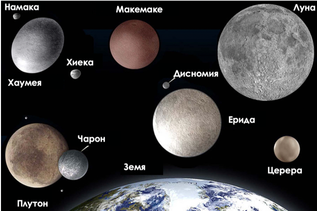

Планета джудже е небесно тяло, сходно по параметри с планета, имащо достатъчно голяма маса, за да придобие приблизително кълбовидна форма под действието на собствената си гравитация, но недостатъчна, за да „освободи“ орбитата си от други астрономически обекти. Този термин е приет от Международния астрономически съюз на 24 август 2006 г. като разрешение на проблема с дефинирането на термина „планета“.Друг сходен термин, възприет от съюза, е плутоид. С него се означават планети джуджета, които са отвъд орбитата на Нептун.
Под определението за планета джудже попадат много обекти в Астероидния пояс и Пояса на Кайпер.
Известни планети джуджета:
- Плутон (до август 2006 г. смятан за деветата планета на Слънчевата система);
- Ерида;
- Церера;
- Макемаке;
- Хаумея.
Следните небесни тела претендират за статут на планета джудже:
- Кваоар;
- Иксион;
- Седна;
- Оркус.
Терминът планета джудже трябва да бъде различаван от понятието „малка планета“, с което са били наричани астероидите. Официално терминът „малка планета“ повече не се използва
Учени откриха нова планета джудже, която се носи по периферията на Слънчева система - на около 13.6 милиарда километра от Слънцето.
Обектът, обозначен като 2014 UZ224, прави една пълна обиколка около нашата звезда за 1100 години и скоро ще се присъедини към компанията на петте планети в Слънчевата система, приети за джуджета: Церера, Ерис, Хаумея, Макемаке и, най-известната от всички, Плутон.
Въпреки че до момента само 5 планети джуджета са били официално признати като намиращи се в Слънчевата Система, хипотезата, че има още поне 100 в Пояса на Куйпер, е много популярна. Поясът е регион отвъд орбитата на Нептун, за който се смята, че е пълен с комети, астероиди и малки планетарни тела.
“Когато наблюдаваме даден обект, той се намира на определено място на небето. Само след 2 седмици вече е на друго, след 4 месеца - на трето и т.н. Затова проблемът да свържем отделните наблюдения е наистина сериозен и представлява голямо предизвикателство,” казва физикът Дейвид Гердес от Мичиганския университет.
Плутон е втората по големина планета джудже, обикаляща около Слънцето за приблизително 248 години, така че от откриването ѝ досега тя не е изминала дори половината от пътя по орбитата си. Плутон е замръзнал безжизнен свят в покрайнините на Слънчевата система. До 24 август 2006 г. Плутон се смята за деветата планета от Слънчевата система. Поради малките си размери, наклона на орбитата спрямо слънчевия екватор и ексцентричната си орбита, заради която понякога се намира по-близо до Слънцето от Нептун, винаги е имало спорове дали Плутон трябва да се разглежда като планета. Небесното тяло носи името на римския бог на подземното царство. Символът на планетата е комбинация от първите букви (на латиница) от името на американския астроном Пърсивал Ловел. В средата на XX век е установено, че блясъкът на Плутон се променя с период 6,4 дни. Първоначално се смята, че това е период на околоосно въртене на планетата.
През 1978 г. американският астроном Кристи обръща внимание, че фотографският образ на планетата е удължен и голямата ос на образа се върти със същия период. След време се изяснява, че това удължаване на образа се дължи на спътник, разположен много близо до планетата. Спътникът е наречен Харон (по името на лодкаря от гръцката митология, превозващ душите на умрелите през реката Стикс в царството на мъртвите). Той се намира на разстояние около 20 000 км от планетата и има диаметър около 1200 км, т.е. сравнително близък до този на Плутон. Следователно Плутон и Харон всъщност са двойна планета и обикалят около общ гравитационен център.